Sheet 01 · City plan
RAIC 400 · Assignment · Site selection
Four candidate sites
Cairn Youth Centre: a year-round residential centre for visiting students aged 12 to 15. Calgary and the western foothills.
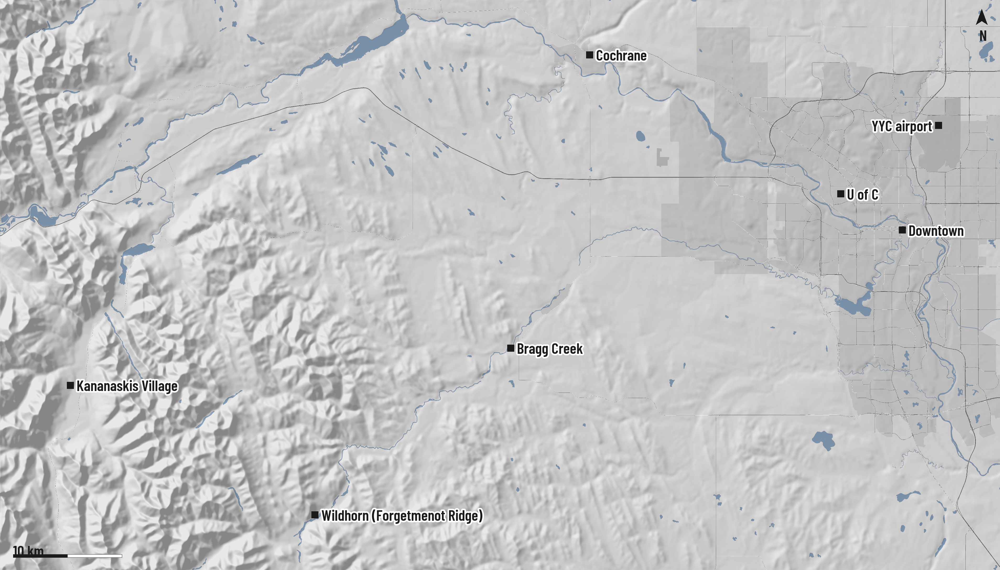
1A · Inglewood
2B · Glenmore Landing
3C · Loch McKinnon
4D · Glenbow Ranch
Ben Hackman · RAIC 400 · October 2026
Early site analysis: values are approximate and for comparison only.
SHEET 01/14
Sheet 02 · 1 C context
1
Site 1 of 4 · Context · Inner city
A · Inglewood
Bird Sanctuary entrance, Nature Centre lot
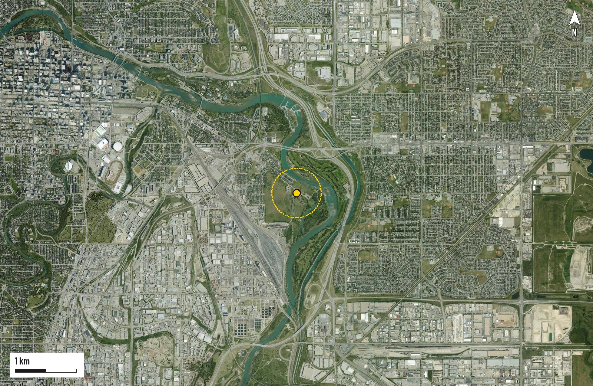
Ben Hackman · RAIC 400 · October 2026
Context from OpenStreetMap and City of Calgary open data, checked against aerial imagery.
SHEET 02/14
Sheet 03 · 1 C site
1
Site 1 of 4 · Site · Inner city
A · Inglewood
Bird Sanctuary entrance, Nature Centre lot
28/ 35
Rank 1 of 4
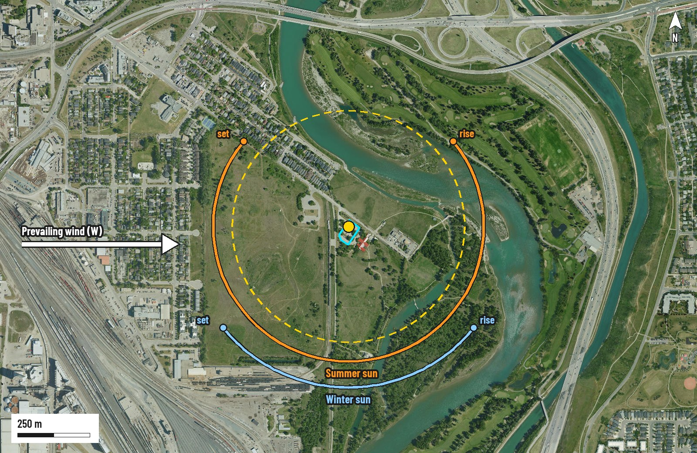
Ben Hackman · RAIC 400 · October 2026
Drive times rounded to 5 min, off-peak; allow more at rush hour or in winter. Flood risk from the Alberta flood hazard maps.
SHEET 03/14
Sheet 04 · 1 C terrain
1
Site 1 of 4 · Terrain · Inner city
A · Inglewood
Flat river terrace; the ground barely changes around the lot
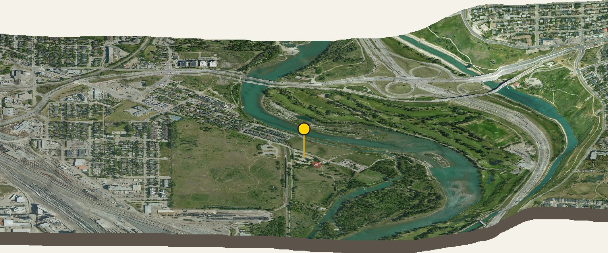
Ben Hackman · RAIC 400 · October 2026
Elevation model is about 20–30 m resolution: reads the landform, not the fine grading. A site survey comes later.
SHEET 04/14
Sheet 05 · 2 F context
2
Site 2 of 4 · Context · Suburban edge
B · Glenmore Landing
Forest north of the retail, South Glenmore Park
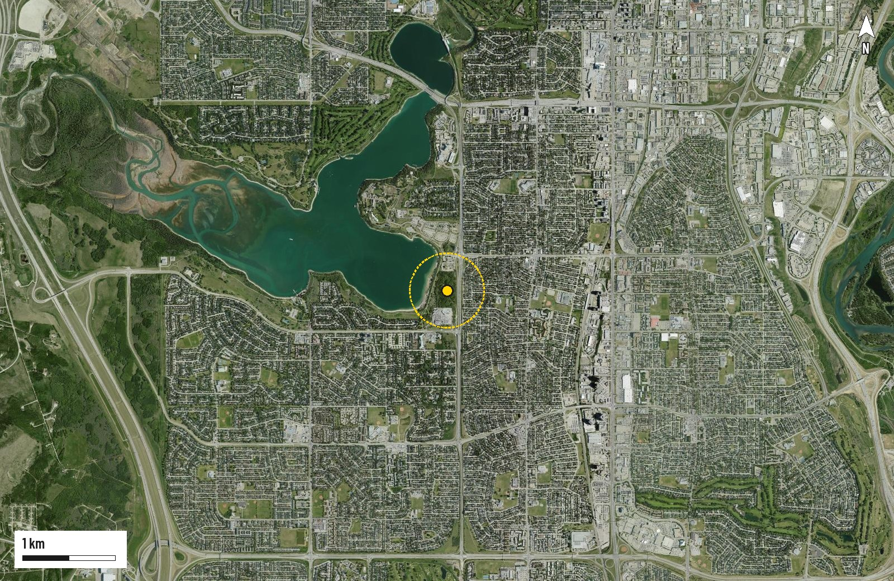
Ben Hackman · RAIC 400 · October 2026
Context from OpenStreetMap and City of Calgary open data, checked against aerial imagery.
SHEET 05/14
Sheet 06 · 2 F site
2
Site 2 of 4 · Site · Suburban edge
B · Glenmore Landing
Forest north of the retail, South Glenmore Park
27/ 35
Rank 2= of 4
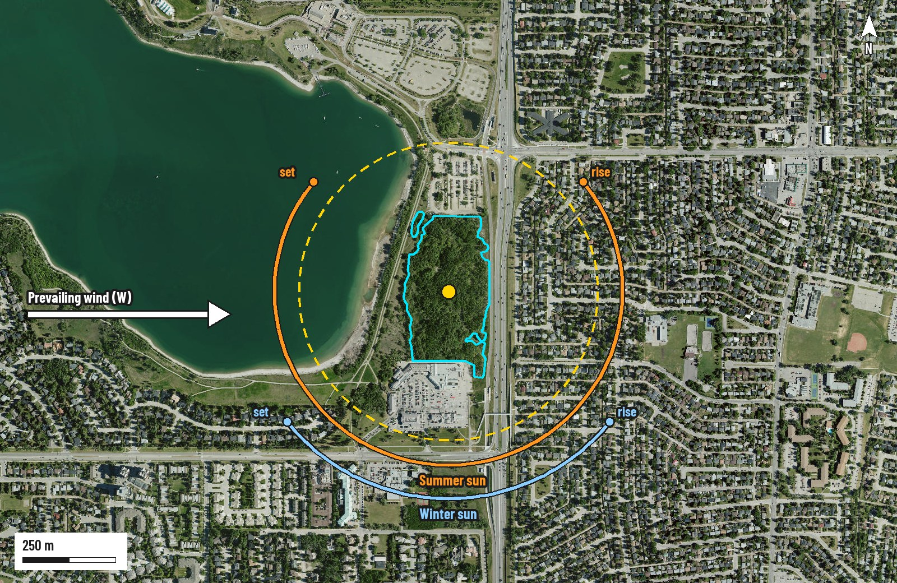
Ben Hackman · RAIC 400 · October 2026
Drive times rounded to 5 min, off-peak; allow more at rush hour or in winter. Flood risk from the Alberta flood hazard maps.
SHEET 06/14
Sheet 07 · 2 F terrain
2
Site 2 of 4 · Terrain · Suburban edge
B · Glenmore Landing
Nearly level, with a gentle fall west to the reservoir shore
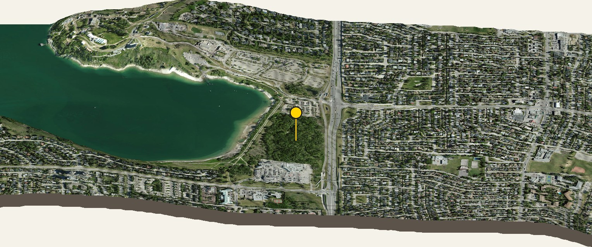
Ben Hackman · RAIC 400 · October 2026
Elevation model is about 20–30 m resolution: reads the landform, not the fine grading. A site survey comes later.
SHEET 07/14
Sheet 08 · 3 I context
3
Site 3 of 4 · Context · City's western gate
C · Loch McKinnon
Shriners' field, NW of the Shrine Centre
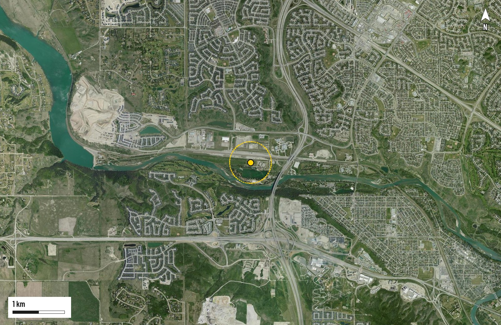
Ben Hackman · RAIC 400 · October 2026
Context from OpenStreetMap and City of Calgary open data, checked against aerial imagery.
SHEET 08/14
Sheet 09 · 3 I site
3
Site 3 of 4 · Site · City's western gate
C · Loch McKinnon
Shriners' field, NW of the Shrine Centre
27/ 35
Rank 2= of 4
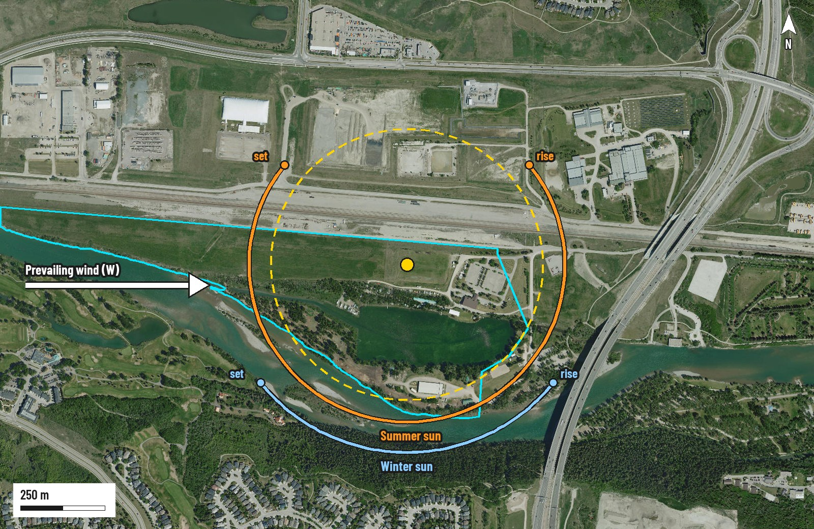
Ben Hackman · RAIC 400 · October 2026
Drive times rounded to 5 min, off-peak; allow more at rush hour or in winter. Flood risk from the Alberta flood hazard maps.
SHEET 09/14
Sheet 10 · 3 I terrain
3
Site 3 of 4 · Terrain · City's western gate
C · Loch McKinnon
Level terrace above the lake, with gentle slopes nearby
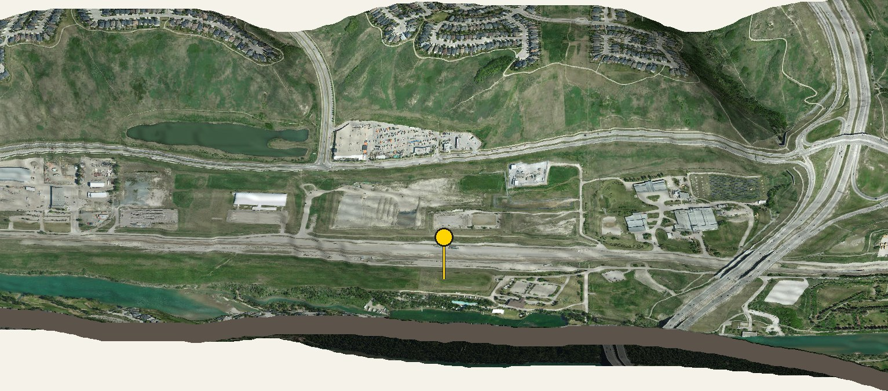
Ben Hackman · RAIC 400 · October 2026
Elevation model is about 20–30 m resolution: reads the landform, not the fine grading. A site survey comes later.
SHEET 10/14
Sheet 11 · 4 N context
4
Site 4 of 4 · Context · Rural, provincial park
D · Glenbow Ranch
Ranch house at the end of Glenbow Road
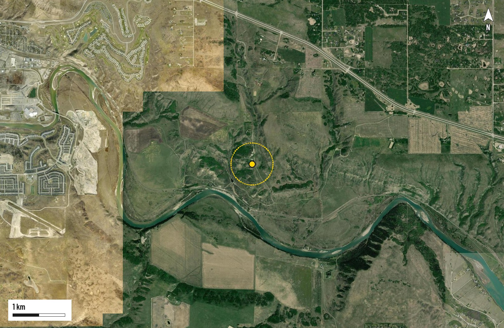
Ben Hackman · RAIC 400 · October 2026
Context from OpenStreetMap and City of Calgary open data, checked against aerial imagery.
SHEET 11/14
Sheet 12 · 4 N site
4
Site 4 of 4 · Site · Rural, provincial park
D · Glenbow Ranch
Ranch house at the end of Glenbow Road
23/ 35
Rank 4 of 4
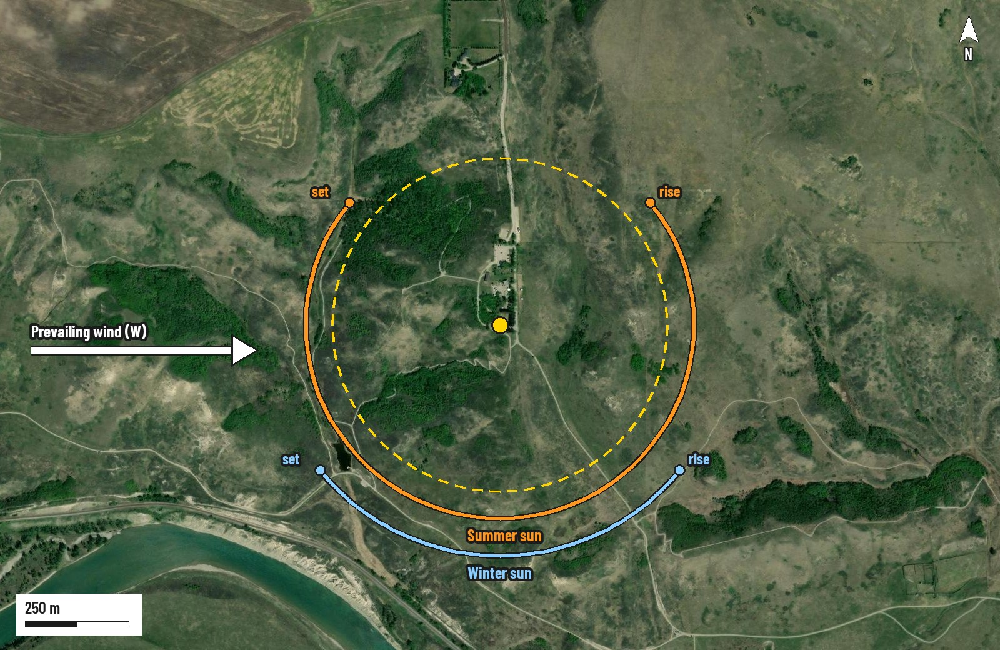
Ben Hackman · RAIC 400 · October 2026
Drive times rounded to 5 min, off-peak; allow more at rush hour or in winter. Flood risk from the Alberta flood hazard maps.
SHEET 12/14
Sheet 13 · 4 N terrain
4
Site 4 of 4 · Terrain · Rural, provincial park
D · Glenbow Ranch
Sloping bench that falls south toward the Bow
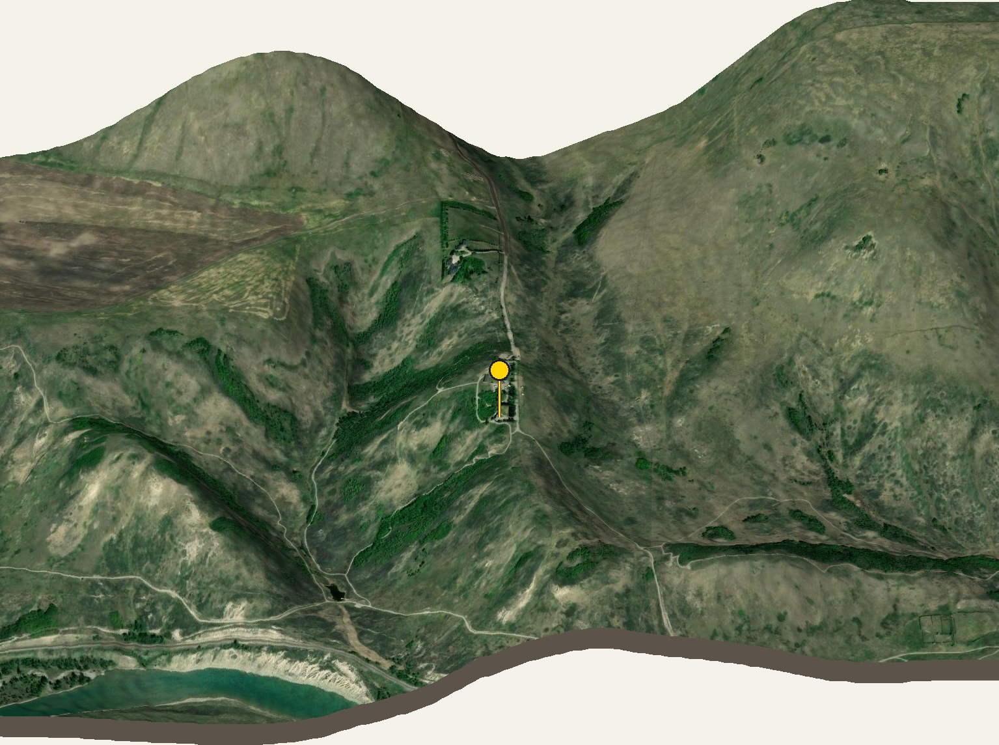
Ben Hackman · RAIC 400 · October 2026
Elevation model is about 20–30 m resolution: reads the landform, not the fine grading. A site survey comes later.
SHEET 13/14
Sheet 14 · Summary
RAIC 400 · Site selection · Summary
Four sites compared
Seven criteria, each scored 1 to 5, out of 35.
1A · Inglewood
2B · Glenmore Landing
3C · Loch McKinnon
4D · Glenbow Ranch
Ben Hackman · RAIC 400 · October 2026
Early site analysis: scores are judgments for comparison, not measurements.
SHEET 14/14